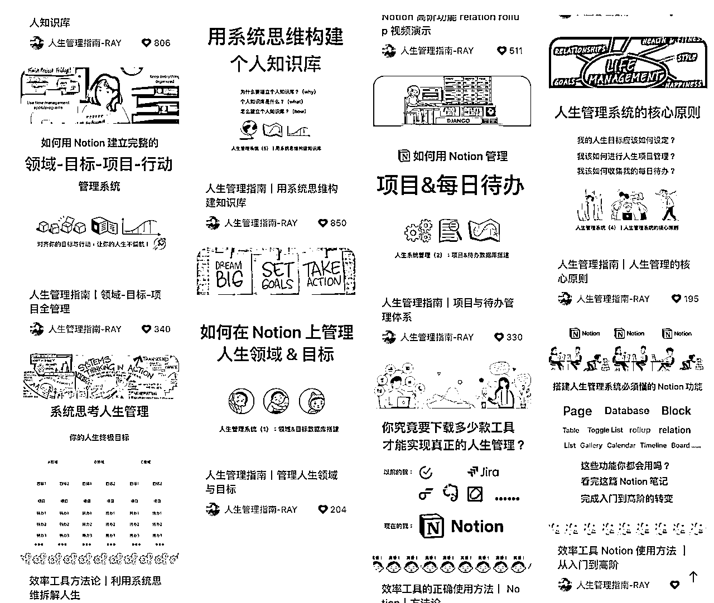
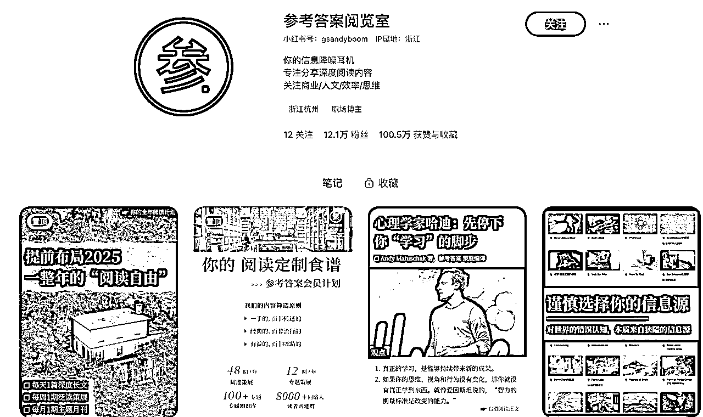
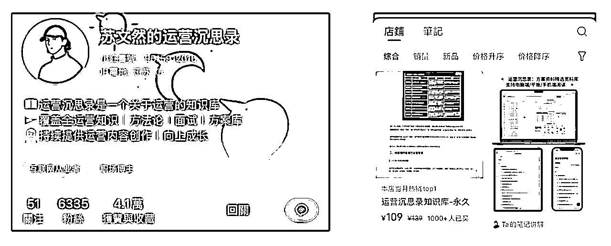
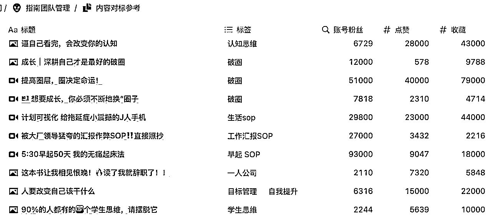

来源：https://cqlcm05bxl.feishu.cn/docx/GgaNdgubyojAspxcENDcBtbQnae
RAY，2020 年厦门大学软件工程毕业，互联网做了 3 年产品和运营，2023 年下半年被裁，通过 Notion ，1 年的时间，在 2024 年成为了一名 95 后超级个体，整体变现达 7 位数。
就业率如此低的大环境，我从被裁到创业，从做流量到实现商业化变现，再到今天重新考虑定位升级，我是这个时代下的典型画像。
如果你也是刚毕业，找不到工作；或者刚被裁，不知道自己的方向在哪；亦或是正在面临转型危机的 35+ 中产，我想我的经历，多多少少可能对你有些启发或帮助。
2020 年毕业之后，我一直都在 SaaS 行业，第一份工作前半年的时间，做产品运营，后面转成增长产品经理，负责流量转化、数据埋点和分析、产品优化设计等事情；2022 年的时候，我裸辞了，现在回头来看，那是我成为超级个体最开始的起点，也是我的第一次醒悟。
因为在 SaaS 行业，其实我在 2020 年就接触到了 Notion，但是后续 2 年的时间，都没有任何使用上的提升，直到第一份工作裸辞之后。我决定开始重新规划我的职业发展与个人生活——Notion，就这么再次被我用起来了。
实话实话，Notion 的使用门槛确实很高，但因为我越发觉得做计划这件事，对当时的我来说，太为重要；所以，我花了当时快一半的月薪，去买了一套国外的课程，学习了别人如何构建自己的生活管理系统，从目标到日常待办，从读书、资料收集到灵感记录、文章输出，它覆盖生活的方方面面——而这个产品，也是我后来变现 7 位数的主力产品，个人 IP 就是这样，你会什么，你用什么成就了自己，那就尽管去分享，再用它去成就更多人。
学了那套课程之后，我就开始做小红书了，因为学习的过程中，我也在持续使用 Notion，它大幅度改善了我的生活状态——所有脑子里的信息，变得异常清晰，我的目标是什么，每周的计划是什么，今天有哪些待办，读了哪些书，写了哪些笔记…如果把生活看作一个产品，那 Notion 就是它的数据大屏，时时刻刻让你知道，自己在哪，应该去哪，哪里需要改善，哪里值得坚持。
2022 年 9 月，我发了第一篇小红书图文，每个月大概 4-5 篇的样子， 3 个月，就涨了 5k 粉丝——现在回头看，能涨这么快，就 2 个原因，一是内容稀缺度，当时小红书并没有太多人讲 Notion 人生管理系统的内容，很多都是泛泛而谈，但我是第一位，讲逻辑、讲系统的人；第二个原因是，我自己的审美还行，视觉设计有优势。

每个月 4-5 篇，做到 2023 年中的时候，小红书已经有 1 万多粉丝了，我就开始想着，到底要如何变现，卖 Notion 的产品，总感觉国内用户没多少，可能会没市场…但恰好是那个时候，少数派推了 Notion 的课程，纯功能教学，图文版，卖 199 元一份，1 个月的时间，卖了 60 万，所以，我也决定，开始尝试卖 Notion 课。
但是，录课其实是一件很耗费精力的事情，不知道做课方法，不懂得录课流程，对于当时还有主业工作的我来说，几乎是没办法推进的。
然后，就这么巧，我被裁了——这是现在回头看来，我在成为超级个体这条路上的第二个转折点。想创业，想当自由职业，想成为超级个体，一定需要从上班状态切换过来，但很多人会非常的纠结内耗，迟迟做不了决定，拖得越久，一开始的热血和期待，也会被消磨殆尽。
我很幸运，上天帮我做了选择，被裁一点也不要慌，很可能是上天在引导你去一个更好的人生方向。
所以，我开始专心录课，一边做图文笔记搞流量，一边录课准备产品，2023 年 11 月底，课程发布，599 元，1 年的时间，卖了小 2000 人。
这就是我用 Notion 变现 7 位数的故事。
过去 1 年我自己的业务模式非常简单，低转高，通过低价训练营或直播，转化 599 的课程，以及一个 1999 元的 50 天的陪跑训练营（围绕录播课内容进行扩充），训练营每 3 个月开一次，每次招生 50-80 人。
但我的模式，其实有 2 个难点，可能不太适合个体户。
一是直播讲课能力，背后需要强大的知识储备，你需要对时间管理、知识管理、效率工具这些内容有自己的理解，并且还能随时答上用户的各种问题；如果你只是想做一个副业，其实根本没必要开直播，流量变现的方法太多了，不用选最难的这一种。
二是交付的能力，因为转化营的设置，陪跑营的社群运营，背后涉及到大量的动作，都不是一个人能完成的事情。所以我的模式，其实不太适合个体户，除非你有一个小团队，并且有很强的逻辑思维与直播能力。
但是，Notion 除了卖课程之外，还有好几种其他的变现模式，都是个体户可以尝试的路径。
Notion 全球有 100 多万的创作者，变现模式大概分为 4 类：
现在来讲一下，这 4 种变现模式，他们的详细玩法、市场情况以及难点在哪。
卖模板，边际成本为 0 的知识商品，面向所有 Notion 用户，模板的作用，其实主要是给 Notion 小白用户学习和参考。对于一个还对 Notion 使用不熟悉的人来说，模板是最快的学习方式，因为 Notion 注册后，就是一张白纸，什么都没有，它本身并不能帮助你解决具体的问题，只有通过熟悉 Notion，搭建出来具体的管理系统，才能帮助你解决各种问题，Notion 的价值才会开始释放。
但是，正因为 Notion 有较大的学习成本，所以，卖模板，是一个非常大的市场。可以说，只要 Notion 本身的用户数在增加，那卖模板这个市场，一定也会越来越大。
就像卖 PPT 模板，20 年前就有人卖，现在的淘宝、闲鱼，依然还有无数人在卖——为什么能持续这么多年，因为 PPT 的用户数量一直都在增加，当它当成为职场必备技能之后，全球范围内的每一届毕业生，都是它的新用户来源。
卖模板的模式非常简单，做自媒体账号，然后直接在店铺内挂商品，不需要任何私域上的操作，非常适合个体户每个月赚个零花钱。
国内卖模板的平台主要是小红书，当然 b 站也可以同步挂上；但据我观察，国内大多数只卖模板的 Notion 创作者，主要的销量还是在小红书。
卖模板这件事，甚至不需要做短视频，小红书图文就够了，非常轻的流量成本。
而卖模板的难点，在于如何做出差异化的模板，以及在内容上找到合适的人。
Notion 模板的市场已经经过了好几年的发展，个人场景下的各种模板，已经在海内外都卖烂掉了。所以，如果能结合一些专业知识，打垂直领域，并且设置更高的客单价，再通过内容找到目标人群，这可能比网上各种什么模板都卖的 Notion 创作者，会有更高的变现效率。
卖课程的话，说起来就很泛了，这可能是天花板最高的变现方式，但同时也是最难的变现方式。
目前市面上的 Notion 课程，大概分为 2 类，一是纯功能教学，每个功能一节课，教你怎么一步步学会每个 Notion 的功能点，这种课一般卖不了高价，因为工具课，并不能帮助人直接解决问题，用户遇到一个问题，然后开始用 Notion，发现 Notion 成本高，然后还想到要主动学习，才会对这类课程有需求，和问题隔得太远，路径太长，所以这一类课程，卖不了高价，而且受众也不多。
当然，如果你已经有很大的流量，卖一卖也是可以的，比如少数派在 2023 年推出的 Notion 教程课，图文形式，主要讲功能，凭借少数派的官网置顶（官网每个月 UV 应该有大几十万），再加上几次公众号的宣发（平均阅读 1w+），一个月的时间，199 的课程，也卖了5、60万。
第二类课程的话，就是把 Notion 当成解决问题的工具，课程里面不仅教工具，更重要的还有教方法。
比如很多人有拖延症，行动力低下，你是一位时间管理的资深教练，开了一门课程，里面讲了非常多的管理方法，还提供时间管理的 Notion 系统，并且在社群内带着大家持续使用，最终帮助大家提高行动力，解决拖延症的问题。
这一类的课程，那就能够卖很高的价格了，因为别人遇到问题，就能找到它，并且用它解决问题，而 Notion，只是整个课程内的一小部份内容，只是一个方法落地的工具。
实际上，对于大多数人来说，完全没有必要去学习 Notion 的全部功能。如果你想用 Notion 做时间管理，那就掌握时间管理系统内相关的功能；如果你想用 Notion 做财务管理，那就掌握 Notion 财务系统相关的功能。需要什么，学习什么，这才是最高效的学习方式，也是对于用户来说，性价比最高的方式。
第三类，是卖个性化定制和咨询，这个业务模式，也可以直接参考 PPT 定制和咨询。
虽然很多人认为 Notion 是一款笔记软件，但实际上，全球范围内，为 Notion 贡献主要营收的群体，是各种中小团队，它们用 Notion 构建各种团队管理系统，比如 CRM 客户管理、财务管理、项目与任务推进、团队知识库等——这其实才是 Notion 真正的定位，无代码 SaaS 平台。
而个性化和咨询，主要是就是服务 B 端。因为这些 Tob 的系统还是比较复杂的，大多数人没有搭建的能力，你需要了解客户的需求，理清各种逻辑和流程，这其实做的是 SaaS 行业里面售前的工作，所以，对 Notion 的掌握程度，要求是最高的，甚至高于前面的卖课。卖课需要的是综合能力，但做定制化，需要的是你对于 Notion，对于各种业务场景的精通。
其实对于个人来说，咨询与定制是一条更好的路线。
它是一个更适合个人长期发展的方向，做 Notion 咨询，就是做 SaaS 咨询，背后对于业务场景的理解能力、逻辑能力、沟通能力都有很高的要求，一旦养成，就算没有 Notion 这款软件，你也可以继续从事相关的数字化咨询工作。
所以，如果你足够有耐心，相比于卖模板、卖课程这种更吃流量能力的变现模式，做个性化咨询与定制，会更加适合。
最后一个变现模式，就是卖知识库，这是一个我觉得，完全不需要懂 Notion，只要你有知识，你就能实现变现的模式，它是每个人自媒体小白都应该去尝试的模式，不仅仅是为了变现，而且对于自己知识内化能力的提升，也有很大的帮助。

参考答案，一个在小红书卖 Notion 知识库卖出圈的帐号，100+ 的客单，通过图文+投流的方式，1年的时间，营收做了几百万。
它们是最早在小红书上卖 Notion 知识库的账号，这个知识库主要是一些国外文章的翻译，大多是偏科技类、个人成长类的文章，对于大多数不会英文、不知道如何科学上网的人来说，非常有吸引力。
这个帐号的内容生产成本非常低，把 Notion 内的文章截图，直接做成小红书图文，文案也复制本来就整理好的文章内容，然后取一个标题，一篇笔记就制作完成了。
现在这个帐号， 一共发文 799 篇，涨粉 12.1 万，变现超过 500 万，私域里面沉淀了几万名爱阅读的粉丝，数据都非常亮眼。
当然，这是 Top 级别的案例，并且也是做得最早的案例。
做业务，选赛道的时候，最重要的就一件事，这个赛道有没有跑出来的大案例，而参考答案，就是卖知识库这个赛道上的大案例。
所以，当参考答案越来越火之后，小红书类似的帐号越来越多，内容只要体现出差异化，变现就非常容易。
比如下面这个帐号，24 年做的号，笔记发了 213 篇，涨了 6k+ 粉丝，变现达到 13w+。而且笔记制作的模式，和参考答案一模一样，直接采用截图，或者拍照知识库的模式，只发运营类的内容，很明显针对的人群，就是刚做运营的小白，够垂直，且基数够大。

为什么说人人都可以卖知识库，因为它的变现，完全不需要任何核心能力，大家都是上过学的人，没有人不会整理信息，内容制作上也没有任何成本，找到好的知识库定位，坚持发内容，变现自然就能实现。
所以，我们接下来分 2 快去讲这个事情，一是知识库如何设计，二是小红书的流量方法。
知识库要想好卖，第一步就是确定好定位，抓住人群的核心需求。
比如上面卖运营知识库的案例，对于小白来说就很实用，既有各种知识，知识库内还有各种方案模板，社群运营方案、公众号运营方案等，记得我第一年刚上班的时候，我也会到处找这些资料，不过那个时候全是百度云打包，还没有知识库体验那么好。
如何确定定位，我分享 2 个思路。
一是从你最擅长的方向出发，这种比较适合于在一个领域内打拼多年的资深人士。整理一套关于你们这个行业内的各种信息，自己这么多年下来踩的各种坑，把它整理出来，然后用 Notion 或者飞书知识库来呈现。不会搭建知识库，也完全不要紧，因为你可以直接套用别人的模板，再把它改成自己的内容就行。
第二个思路，就是直接去找需求，找你觉得最好做的内容方向，这样变现来得会更快。
比如，你针对情感赛道，做一些类似的知识库，它的变现效率一定比个人成长类的更高，因为前者是刚需。
不过，在第二个定位是路上，你的内容就要花更多的心思去研究，因为也不是自己接触过的领域，所以无论是做知识库的内容，还是流量端的内容，都要不断学习这个赛道上的知识，再进行二次输出；不像第一种定位方式，基于自己的长处去做，所以本身就有非常多可以分享的内容。
两种定位方式，各有各的好，根据自己的目标与需求去选择就好。
确定了知识库的商业定位，接下来就是去整理内容。
整理的过程，其实也是自己学习的过程，所以在这个知识库设计的过程中，你不仅仅是在做变现产品的准备，同样也是在持续锻炼自己的学习能力——这是非常重要的，因为未来的超级个体时代，AI越来越强大，学习能力会变得越来越重要。
当知识库设计好之后，接下来，就是去搞定流量。
如果要卖知识库，一定是做小红书，并且一开始，图文内容完全就足够了。
图文内容的形式，可以直接参照参考答案，截图 Notion 内的知识库，做成图片，文案内容也直接采用知识库内本身的文案。
唯一要注意的是，如何把自己的内容，结合好的选题，写出有流量的笔记。
如果你是小红书小白，可能看不懂我刚刚说的这句话，下面我解释一下。
一篇笔记，可以分为 2 的部份，选题 + 详细内容。
选题，就是封面+标题，传达出来的信息；而详细内容，就是短视频详细文案，或者图文内容中的文案和图片信息。
同一个详细内容，有非常多的选题可以去切入。
比如，你要告诉大家如何减肥，分享自己的一些减肥经验，选题的角度是非常多的：
不同的选题，决定算法推荐给谁，有时候为什么同一篇内容，换一个封面+标题，流量就好了很多，这就是选题的魅力。
如何去找到小红书上的大选题，一是主动搜索，去看看类似的选题，其流量大概都是什么情况；二是多刷，刷到爆款的时候，可以记录下来，然后后续就能够直接参考，比如像我自己，就会用 Notion 搭建一个对标库，去给我整个 Notion 流量系统赋能：

但是，做小红书，最重要的，其实也不是技法，而是坚持，在对的方法基础上，坚持发，持续发，前 3 个月根本不要管什么数据，围绕知识库的主题，就是一顿发，熬过一开始的 3 个月，你就会发现，流量情况、变现效率…一切都在变得更好。
以上就是用小红书来卖 Notion 的所有操作方法。
如果你经常在Youtube 上冲浪，你会发现 Notion 已经成为了各种博主 IP 必用的工具。只需要一款软件，你能构建出管理自己生活、工作方方面面的所有系统，信息统一存储，还能用数据库进行各种结构化分析，并且现在有了 AI 小助理，能够直接对你存储过的数据，进行分析，帮助你决策，同时，ChatGPT 目前已经打通了 Notion，在使用 Notion 的同时，可以直接调用 GPT 的回答。
超级个体时代，小团队协作，或者一个人的公司，如果掌握了 Notion，你的业务效率、变现效率，都会有非常大的提升。
很多朋友之前也问我，飞书和 Notion 的区别在哪，对于大多数基础需求，比如就简单写个文档，随便开一个数据表来管理，二者相差并不大；但是如果要构建各种管理系统，飞书的灵活性，远远弱于 Notion，在各种表的链接，工作流的构建上，一个做了 11 年的产品，其性能一定是远远超过飞书的。